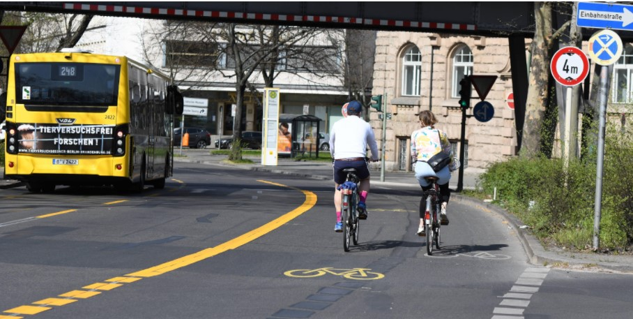
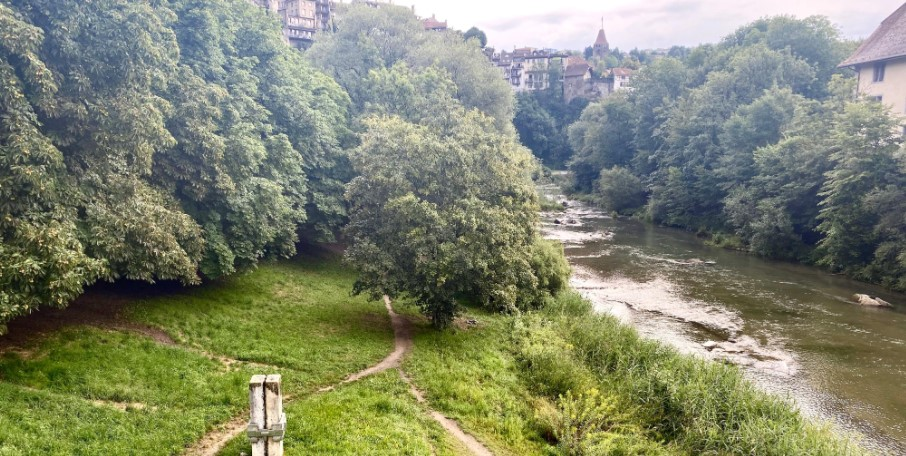

Klimafreundlich unterwegs
Datum 30.06.2021

SPRECHERIN:
Rein in die Pedale und rauf auf den Pop-up-Radweg: Diese neuen gelb markierten Fahrradstreifen haben in Berlin einiges in Bewegung gebracht. Sie wurden eilig in der Corona-Pandemie geschaffen, um Fahrradfahrern mehr Platz und Sicherheit zu bieten. Für Nik Kaestner ist das aber nicht genug: Er träumt von einer Innenstadt ganz ohne privaten Autoverkehr und sammelt Unterschriften für ein Volksbegehren.
NIK KAESTNER (Initiative „Berlin autofrei“):
Ja, wir wünschen uns auch, dass die Stadt klimafreundlicher wird. Und die Klimaziele erreichen wir nicht, wenn wir weiterhin mit Autos rumfahren. Und sogar mit E-Autos erreichen wir nicht unsere Ziele, denn E-Autos können auch Unfälle bauen und nehmen trotzdem viel Platz weg.
Symbol für Schweizer Kulturvielfalt: der Röstigraben
Datum 29.06.2021

In der Schweizer Stadt Fribourg – oder Freiburg, wie die Deutschschweizer sie nennen –, direkt am Ufer des Flusses Saane, steht ein Denkmal. Es besteht aus zwei Kalkblöcken – der eine grau, der andere ockerfarbig –, zusammengehalten von einem gusseisernen Band. Das Denkmal erinnert an die Vereinigung von Romands, also den französischsprachigen Westschweizern, und Deutschschweizern. Die Romandie besteht aus vier Kantonen sowie den frankophonen Teilen der bilingualen Kantone Bern, Wallis und Freiburg. Genau hier in Fribourg verläuft die Sprachgrenze. Wer in der Schweizer Stadt aufgewachsen ist, musste von klein auf damit umgehen und auch ertragen, gehänselt zu werden, erzählen zwei Frauen:
„Wir sind hier geboren … Hier sind Sie vor dem Schulhaus Französisch … / Ja. / Und wir haben Deutsch gesprochen. Da unsere Eltern deutschsprachig sind, sind wir in die andere Schule … / Ja. /… das heißt, über die Saane hier, über die Brücke in die deutschsprachige Schule [gegangen]. Und auf dem Pausenplatz haben wir beide Sprachen – Französisch und Deutsch – [gesprochen], aber wir wurden schon gehänselt.“